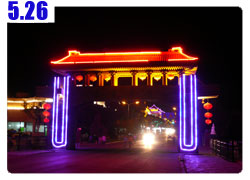

和一千兩百隻羊露營
八點整離開旅館的時候，雖然才一大早，但是太陽已經很火熱，才剛旭日東昇就這麼毒辣，看來今天有的受了。
出發騎五百公尺，才想起來五元的住宿押金還沒有退，趕緊掉頭回去拿，還好沒騎很遠，不然就要思考要不要為了五元走回頭路。

本來從玉門到安西是135公里，計畫一天應該可以到，但是因為逆風的緣故，騎起來超慢的。
如果真的要一天騎到的話，那到安西的時候已經是晚上八、九點，可能得分兩天走比較輕鬆。
昨天消失的312國道又重新在玉門出現，真開心，看來今天可以循規蹈矩的騎車，往今天的目的地，安西(教練？)前進。
一個半小時後，騎了26公里，雖然說是預料中事，但還是令人嘆氣，312國道又要消失了。

在我還有選擇的時候，找個鐵絲網破洞，再度把小多扛上高速公路，這真是一項很艱鉅的工程，小小的樓梯都佈滿了碎石和風沙，
自己用走的就會滑倒，更何況還要想辦法把掛滿背包的小多也一起扛上來，一不小心就會摔得人仰馬翻。
小心翼翼加氣喘吁吁，我又走回這條高速公路了，它是有名字的，叫做『連霍國道』。
炎熱的太陽、超強的逆風、平坦的高速公路，今天和昨天根本就是同樣的翻版。
道路兩旁都是一望無際的沙漠，一絲絲的雲彩除了很漂亮之外，沒有阻擋太陽的功能。
這麼荒涼的地方，連棵樹都沒有，所以一整天都在大太陽下騎車，整個很曬。
離開玉門都還沒有吃早餐，就在雜貨店補充一點糧食，
一共買了三根超粗的熱狗、兩包騙小孩的豆乾零嘴、一包蜜餞和一根麻花捲，就吃這些東西當早餐。
騎到中午依然沒有出現任何的商店，連一點人跡都沒有，加油站沒有，好不容易看到休息站，居然還在施工，什麼東西也沒有營業。
肚子餓的受不了的時候，就開一包花生來吃，補充熱量才騎的動車，早餐跟午餐都是用零嘴打發。
吃東西倒是簡單，喝水就比較麻煩，之前都會在中午吃飯的時後順便補充飲水。
現在沒有商店和餐廳，自己帶的三個水壺，我是規劃每騎30公里喝完一瓶水，但是今天太陽很大，水消耗的很快。
一喝光就沒辦法補充，只能乾渴的騎車，看來接下來出發，除了裝滿三瓶水，連三公升的水袋也要裝滿比較保險。
雖然戴著棒球帽，但是風很大的時候，照樣一吹就飛得老遠，我已經不能再弄丟帽子了。
每次都要想辦法把小多停好(因為沒有腳架，所以都要找地方靠著放)，然後跑回頭去撿。
今天走的路，一樣是半邊車道封閉，昨天是封閉右線車道，今天是封閉左線車道，所以我就走在封閉的那一邊。
天空的雲依照道路的兩旁分的很清楚，右邊才有朵朵白雲，左邊則是萬里無雲。

路旁不時有工人在休息，和他們揮手打招呼，順便問一下有沒有水可以讓我裝呢？但是都沒有~_~

雖然覺得熱的快要中暑，但是沒地方可以躲太陽休息那該怎麼辦呢？
就算停下車來也是在大太陽底下呀@@"
好不容易看到有天橋(做給誰走呀=..=)，雖然只有一點點的影子，但對我來說已經是神的恩惠。
把小多停好，自己躺在斜坡上，雖然石頭有點刺刺的，但是感覺比睡在彈簧床還要舒服。
躺在斜坡上，吹著超強的風，非常的涼快～稍微睡了一下。
其實風本來就有它自己的方向，你順著它走那就是順風，逆著它走就是逆風，哪也不走就是陣風。
所以我已經不會因為逆風妨礙騎車，而和它碎碎唸半天，只是那麼巧它吹的方向和我想去的地方是相反的罷了。
這麼強的逆風，同樣的平路，要是我掉過頭騎，踏板都不用踩，就會有時速15公里輕鬆前進。
但要是我逆著風騎車，平路就跟超級上坡一樣，怎麼努力的騎，時速始終都在8~10公里之間徘徊。
風平均都很大，有時候會突然變成超級大風，感覺車子晃動的很恐怖，我就要跳下車，身體趴在龍頭上穩定車子。

這是旅行以來最冒險拍攝的照片，趁路旁都沒有車子經過的時候，小心的拿出國旗，照相紀念:D
我喜歡沙漠，雖然它和我想像中的不太一樣，可是一望無際的景色都是很漂亮的，看著就會心胸開闊起來。
繼續頂著大太陽騎車，曬到後來，我終於產生幻覺看到海市蜃樓，沙漠中居然有湖泊！
我終於瘋了，這就是沙漠的威力呀，揉揉眼睛還是看的到湖泊，用相機拍攝也一樣是湖泊，難道連相機也熱昏了嗎？
慢慢的頂著逆風騎靠近，發現真的是湖泊呀！好大好藍的水，停好小多，爬過鐵絲網，哇哇大叫的跑過去湖邊。
很遠的時候就看到一堆白白的東西，還不太知道是啥米，稍微近一點看才發現都是羊咩咩。
整個也太多了吧，這邊何止幾百隻，到處都是白白的羊咩咩，吃著沿著湖泊長出來的草。
這裡的羊比較不怕生，還會看著我咩咩的叫，好可愛說，好想要抱一隻回家。

這位就是羊咩咩的主人，問了之後才知道，這邊一共有一千兩百隻羊，真是個超驚人的數目，這麼多羊要怎麼養呀XD


近一點看湖泊，水好清澈，也很清涼，真不敢相信這邊是沙漠，怎麼會有這麼多水呢？

口很渴，又看到這麼多的水，很想舀一點起來喝，可是看到水裡飄著羊便便，真的喝兩口的話，腸胃再好也會拉三天吧。

好開心看到這麼多的羊和這麼漂亮的湖泊，和羊咩咩的主人聊天兼問路，
從這邊到安西還有五十公里，現在已經是下午四點半，繼續頂著逆風騎的話，還要四個多小時才會到，很累人。
那如果不騎到安西，只求有個地方吃飯休息的話，前方三公里就有一個叫做雙塔的地方。
只要再騎三公里就可以休息了，真是個好消息，從湖邊再跑回小多那裡去，笨笨的羊咩咩還有幾隻想跟著我走=..=
騎上小多，準備看到城市今天就休息，剩下的明天再騎。
樂極生悲，一騎上車才五十公尺，就被鐵絲刺破後輪爆胎了/_\
不想在大太陽下換內胎，反正才三公里，就用牽的吧，牽到雙塔再說。
還沒到雙塔之前，看到一個牌子『雙塔水庫』，原來這個湖泊是水庫呀。
水庫邊有幾棟房子，稍微靠近一點看，是一間商店，一間活魚餐廳，和一間工寮。
看到商店簡直要哭出來了，已經口渴到口水都變成糊狀的了，牽著車過去，自己開冰箱拿冰涼的可樂出來大口大口的喝。
喝完可樂再拿一瓶橘子汽水繼續咕嚕咕嚕的喝，在商店門口休息的工人們都看傻了，
等我重新活過來之後，才和他們聊上兩句，他們都是『連霍國道』施工的人員。
聽施工的工人講，這條路總長將近五千公里，是中國最長的道路，我現在正騎在三千公里的中段部分，
這條路已經施工了將近三年，取代了原本的舊路，也就是我該騎的312國道，
目前已經快要完工，還剩下兩個月的工期，把護欄裝一裝就搞定了。
旁邊的工寮就是工人住的地方，唯一的一間小商店，就只做他們的生意，旁邊的活魚餐廳也是。
等我喝完汽水，餐廳的人就問我要不要吃飯呀？
『要！當然要呀！餓扁了。』
點了一條紅燒鯉魚，從雙塔水庫裡撈的，最新鮮的魚，一斤16元。
趁魚還沒上桌之前，在餐廳門口開始換後輪的內胎，結果大家就一整圈圍著我開始參觀，不時有些評語：
『我就說沒有三兩下子，怎麼敢一個人騎這麼遠呢？』
『這工具板手挺新鮮的，這麼多工具在裡頭。』
『這齒輪還是變速的，這台車不便宜吧？』
『這氣筒這麼小支也能打氣，唷！居然還有附氣壓表呢！』
結果剛換好內胎就又爆胎，剛剛在路上的時候我就已經把刺破內胎的鋼絲給拔出來，所以就沒有檢查是否有異物在裡面，
真是傷心，才剛換好就又爆了，重新再來一次，其他工人也幫我一起仔細檢查，一共找到三根細鋼絲插在裡面，真是受傷慘烈。
順利再次換好內胎，目前累積已經破四條內胎了，一次被玻璃刺破，三次被鋼絲，平均每八天破一條內胎。
看來騎到巴黎得破個二十條才行~_~
等我收工之後，魚也上桌了，工人說這水庫的水不能喝，含鹼量太高。
可是有的人又說水可以喝，這水是祁連山上的雪水融化來的，雙塔水庫已經有一千多年歷史，從唐朝就有了。
水不能喝，但是魚還是可以吃的，紅燒煮的很好，鯉魚刺有點多，但是超好吃的。
新鮮就是不一樣，配著花捲吃晚餐，勞動後的美食更顯得好吃。
大家都問我今天要騎到安西去嗎？
我說不騎了，已經累翻了，今天就住在這裡。明天再騎。
可是這邊只有工寮，已經住滿了工人，和一間商店、一間餐廳，沒有地方讓我住宿呀？
別擔心，帳篷跟睡袋不是帶假的，今天就在水庫邊搭帳篷露營一個晚上，是旅行以來的第一次露營:D
在和平的狀態下先練習露營，總比之後情急之下很無助的露營來的好。
吃飽後牽著小多繞到湖的正面，八點半夕陽的時候開始組裝帳篷。
出發前我已經在二姊家的客廳練習過露營，這個帳篷其實很傻瓜，就把它攤開，然後放入兩根支架就搞定了。
接著再放入睡墊，用力吹滿氣，這樣可以阻絕地面的寒氣(其實我覺得更重要是隔絕凹凸不平的地面)。
然後再把睡袋給丟進去，這樣就完工啦！

裡面空間其實蠻大的，我要躺著趴著都可以，但是要把全部的行李都拿進來則不可能，所以就把重要的東西放在帳篷裡。
小多就鎖上車鎖，跟其它的背包就用童軍繩綁在一起，然後再綁在帳篷上面，只要東西被拿動，我就會有感應。
今天睡在湖邊，景色非常的吸引人，睡前我到湖邊洗洗臉和泡泡腳，真的是好冰的雪水>"<
晚上九點多天黑，蚊子開始嗡嗡叫，我就躲在帳篷裡面，拉上蚊帳，這樣子就還是可以看到外面的景色和星空。
這個帳篷是在胡大哥的店裡買的，容易組裝、使用上又很方便，真是買對了！
晴朗的夜晚，窩在帳棚整理今天的遊記，沒有蚊子的干擾，晚上還可以躺著數星星睡覺。

這是我第一次自己露營，我很喜歡窩在小地方，像是閣樓(不是雜誌)或是這種帳篷，感覺自己就是一個小世界，很開心～
繼續閱讀：5.26 夜騎敦煌

中國-人民幣－ 1：4.3 台幣
5.25 |
總計：36元 |
雜貨店超大熱狗三根7.5元、騙小孩零嘴兩包1元、蜜餞0.5元、麻花捲1元、可樂3元、橘子汽水3元、晚餐紅燒鯉魚19元、花捲1元 |
|